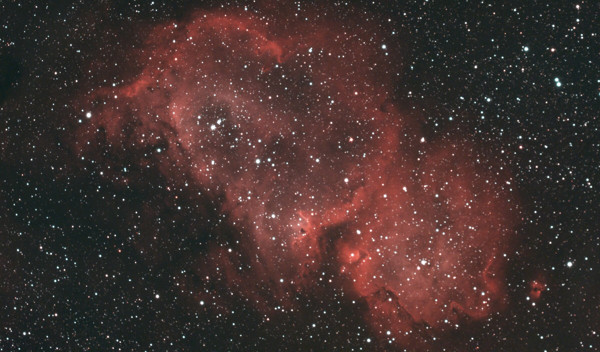
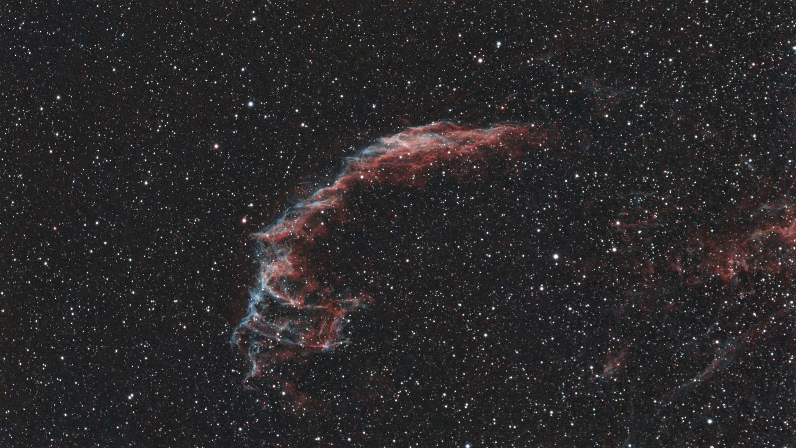

Astrophotography
All photos shot from my garden (Bortle 4.5 sky). I stack and process in Siril and GraXpert.
Main Gear
- William Optics Redcat 51 WIFD
- ZWO AM3N
- ZWO ASI 585MC AIR
- Optolong L-Extreme Dual Band Narrowband Filter
- ZWO TC40 Tripod
